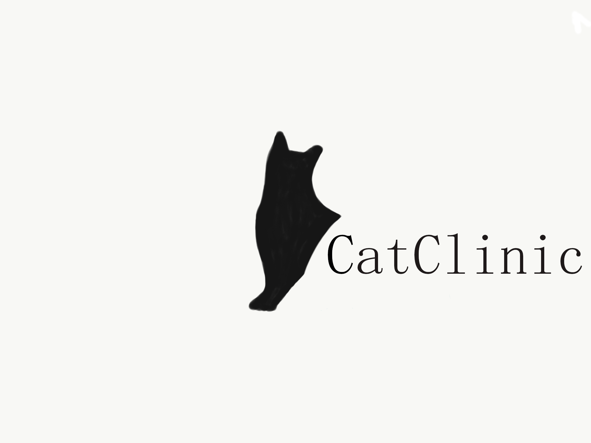

Dans la maison
Amménagement et précautions.
Retour Accueil
Attention
Installez des moustiquaires dans les fenêtres pour éviter les chutes.
Ne laissez pas les jeunes animaux sur un balcon, un perron ou une terrasse surélevés.
Un grand nombre de plantes d'intérieur, comme le dieffenbachia, le philodendron en fer de lance, la plante araignée, sont toxiques quand elles sont ingérées.
Enlevez-les ou placez-les hors d'atteinte dans des jardinières suspendues.
Les chiots et les chatons adorent mâchouiller lorsqu'ils font leurs dents. Par conséquent, débranchez ou enlevez les cordons électriques ou couvrez-les.
Ne laissez pas votre animal sans surveillance dans une pièce dans laquelle un feu de foyer est allumé ou une chaufferette fonctionne.
Les sacs de plastique sont bien amusants, mais votre animal peut s'étouffer en jouant avec eux.
Dites-vous bien que si votre animal domestique peut se mettre quelque chose dans la gueule, il est fort probable qu'il le fera. Ne laissez donc pas traîner de petits objets pointus et faciles à avaler.
